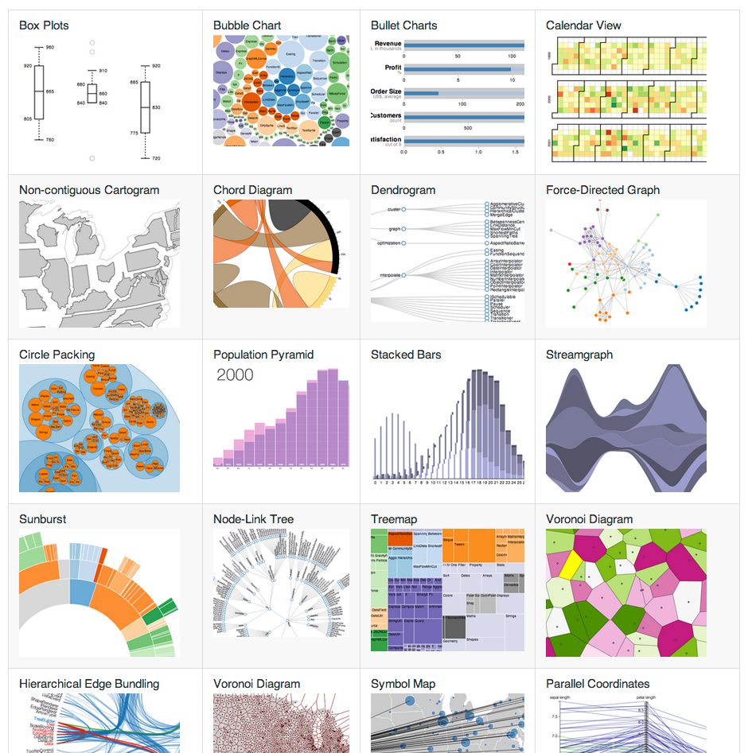

Data-Driven Documents

d3.selectAll("p").style("color", "white");
d3.selectAll("p")
.data([1, 2, 3, 4, 5])
.text(function(d) { return "Number: " + d; });
function update(data) {
// Join
var p = d3.select("body").selectAll("p").data(data);
// Enter
p.enter().append("p");
// Enter + Update
p.text(function (d) { return "Number: " + d; });
// Exit
p.exit().remove();
}
d3.select("button").on("click", function () {
d3.select("body").transition()
.duration(500)
.style("background-color", "black");
});
...and it took wayyy too long to build.
D3 is a library, not a framework
...joined forces to create...
...the Miso Project, which then gave us...
"...a framework for building reusable charts with d3.js"
// Define a new chart type: a circle chart
d3.chart("CircleChart", {
initialize: function () { ... }
});
// Create an instance of the chart on a d3 selection
var chart = d3.select("body")
.append("svg")
.attr("height", 30)
.attr("width", 400)
.chart("CircleChart");
// Render it with some data
chart.draw([1,4,6,9,12,13,30]);
initialize: function () {
// Create a 'layer' for the circles
this.layer("circles", this.base.append("g"), {
// Select the elements and bind the data to them.
dataBind: function (data) {
return this.selectAll("circle")
.data(data);
},
// Insert actual circles
insert: function () {
return this.append("circle");
},
// Define lifecycle events
events: {
// Paint new elements, but set their radius to 0
"enter": function() {
return this.attr("cx", function(d) {
return d * 10;
})
.attr("cy", 10)
.attr("r", 0);
},
// ...then transition them to a radius of 5
"enter:transition": function() {
return this
.delay(500)
.attr("r", 5);
},
// Before removing circles, transition
// their radius back to 0
"exit:transition": function() {
return this.duration(1000)
.attr("r", 0)
.remove();
}
}
});
}
When we call draw with some data, it gets passed through each layer you've defined (lines, bars, axes, labels, etc.).
Each layer knows how to:
chart.width(200).margin(10).circleRadius(10);
So we've got some data to play with. Yay.
(Demo)
chart.areas = {
labelsXTop: chart.base.append('g').classed('OrdinalScatterPlot_labels OrdinalScatterPlot_labels-x OrdinalScatterPlot_labels-x-top', true),
labelsXBottom: chart.base.append('g').classed('OrdinalScatterPlot_labels OrdinalScatterPlot_labels-x OrdinalScatterPlot_labels-x-bottom', true),
labelsY: chart.base.append('g').classed('OrdinalScatterPlot_labels OrdinalScatterPlot_labels-y', true),
background: chart.base.append('g').classed('OrdinalScatterPlot_background', true),
gridX: chart.base.append('g').classed('OrdinalScatterPlot_grid OrdinalScatterPlot_grid-x', true),
gridY: chart.base.append('g').classed('OrdinalScatterPlot_grid OrdinalScatterPlot_grid-y', true),
border: chart.base.append('rect').classed('OrdinalScatterPlot_border', true),
points: chart.base.append('g').classed('OrdinalScatterPlot_points', true),
legend: chart.base.append('g').classed('OrdinalScatterPlot_legend', true),
title: chart.base.append('g').classed('OrdinalScatterPlot_title', true)
};
Each area has a corresponding layer
d3.chart('OrdinalScatterPlot', {
// Expected datum properties
dataAttrs: ['metric', 'value', 'series'],
// Initialisation (+ settings, areas, layers, events)
initialize: function() { ... }
// Fluent API
// - Chart Size
width: function (width, excludesDecorations) { ... },
height: function (height, excludesDecorations) { ... },
// - Metric labels (y-axis)
metricLabelsWidth: function (width, maintainsTotalWidth) { ... },
// - Control dot shape & colour (based on series)
seriesScales: function (names, colors, symbols) { ... },
// - Legend
showLegend: function (maintainsTotalHeight) { ... },
hideLegend: function (maintainsTotalHeight) { ... },
// - Title
title: function (title, subtitle) { ... },
showTitle: function (maintainsTotalHeight) { ... },
hideTitle: function (maintainsTotalHeight) { ... },
// - Value labels (x-axis)
showLabelsX: function (maintainsTotalHeight) { ... },
hideLabelsX: function (maintainsTotalHeight) { ... },
showLabelsXTop: function (maintainsTotalHeight) { ... },
hideLabelsXTop: function (maintainsTotalHeight) { ... },
showLabelsXBottom: function (maintainsTotalHeight) { ... },
hideLabelsXBottom: function (maintainsTotalHeight) { ... },
formatLabelsX: function (formatFn) { ... },
valueDomain: function(min, max) { ... },
// - Tooltips
formatTooltips: function (formatFn) { ... },
_defaultTooltipFormat: function (d) { ... },
// - Dot animation toggle
animated: function (isAnimated) { ... },
// - Linked chart behaviours
linkSymbiote: function(symbiote) { ... },
// Fluent API internal functions
// - Scales
_updateXScale: function () { ... },
_updateYScale: function () { ... },
// - Area size measurement
_effectiveXDecorationsWidth: function () { ... },
_effectiveLeftDecorationsWidth: function () { ... },
_effectiveRightDecorationsWidth: function () { ... },
_effectiveYDecorationsHeight: function () { ... },
_effectiveTopDecorationsHeight: function () { ... },
_effectiveBottomDecorationsHeight: function () { ... },
_effectiveLegendHeight: function () { ... },
_effectiveTitleHeight: function () { ... },
_effectiveLabelsXTopHeight: function () { ... },
_effectiveLabelsXBottomHeight: function () { ... },
// - Area size/position management
_updateAreasDisplay: function () { ... }
});
The same chart can be used to display
different sets of data.
function chart() {
return d3.select('#chart')
.append('div')
.append("svg")
.chart("OrdinalScatterPlot")
.width(700)
.height(44, true)
.valueDomain(0, 10)
.hideLegend()
.hideLabelsX()
.animated(true);
}
var charts = [
chart().title('Kevin Rudd', 'Labor').showLegend(),
chart().height(88, true).showLabelsX(),
chart().title('Tony Abbott', 'Coalition'),
chart().height(88, true).showLabelsX(),
chart().title('Christine Milne', 'Greens'),
chart().height(88, true).showLabelsX()
];
charts[0].base.classed('ptyred', true);
charts[2].base.classed('ptyblue', true);
charts[4].base.classed('ptylightgreen', true);
.ptyred .OrdinalScatterPlot_labels-y .tick:first-child { font-weight: bold; }
.ptyred .OrdinalScatterPlot_subtitle { fill: #BE4848; }
.ptyred .OrdinalScatterPlot_border { stroke: #E7CACA; }
.ptyred .OrdinalScatterPlot_background .tick { stroke: #EFDCDC; }
.ptyred .OrdinalScatterPlot_background .tick:nth-child(even) { stroke: #F7EEEE; }
// Link charts as symbiotes
charts.forEach(function (a) {
charts.forEach(function (b) {
if (a !== b) {
a.linkSymbiote(b);
}
});
});
// In one of the dot mouseover event handlers...
onActivateDot = function (d) {
function activateDot(chart) { ... }
activateDot(chart);
chart.symbiotes.forEach(activateDot);
};
We can already size & resize the chart at will
Just bind to window resize event
window.addEventListener('resize', function () {
var width = $(chart.base.node().parentNode).width();
chart.animated(false).width(width).animated(true);
}, false);
Sure.